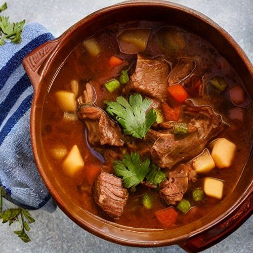

Boeuf africain
Préparation: -
Cuisson: 3 heures
Total: -
Ingrédients
-
1 1/2 livres de boeuf en cubes

-
2 gros oignon
-
1 1/2 t de céleri coupés en dés
-
1 bte de soupe aux tomates
-
1 bte de 19 oz de tomates en dés
-
1 c. à thé de sel et poivre
-
1 c. à thé de sauce Worcestershire
-
1/3 t de cassonade
-
1/4 t de vinaigre
-
1 ou 2 poivrons
-
3 gousses d'ail
-
4 carottes en rondelles
-
1 t de champignons
Instructions
Faire brunir les cubes de bœuf.
Mélanger tous les ingrédients et cuire au four à 180 °C (350 °F) pendant 3 heures.